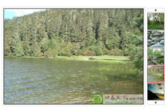

| 姓名 |
何定良 |
性别 |
男 |
|
| 体型 |
瘦小（173cm/54kg） |
| 能力 |
标准化页面制作·自学 |
年龄 |
22（1987.05） |
| 民族 |
汉 |
| 电话 |
15982206433 |
现居 |
四川·成都 |
| 学历 |
成都理工大学·大专 |
| 主页 |
www.hisland.cn |
QQ |
273698404 |
| 邮箱 |
hisland@qq.com |
| |
| 求职意向 |
前端开发，页面重构，页面代码化，页面仔，Ajax，javascript |
| 能力简介 |
熟悉(x)html + css + javascript，对W3C标准、浏览器兼容有一定了解。适合做从设计图到(x)html(标准化页面)的转化和各种JS应用(特效，无刷新)，对用户体验有良好的认识。有使用PHP经验。 |
| 经验积累 |
学习标准化页面制作后，多次帮朋友制作其公司网站的首页及其他重要页面，积累了不少经验。对于页面区域划分；id,class的灵活使用；ps切图以及css模块化有自己的见解。 |
|
| 使用Javascript做了一个图片滚动效果，综合应用了所学的JS知识，使用DOM level1事件处理模型，实践了JS基本功。现正努力研究 《js权威指南》，旨在掌握JS的核心技术。 |
 |
| 从0开始做自己的博客程序，包括设计和程序在内的所有工作，借此构建一个本人能力的展现平台。当我对一个网站如何运行有了充分的了解后，对于我自己工作所做的部分将会更加得心应手。 |
|
| 自我总结 |
本人对计算机的工作原理有良好的认识，对于一般的软(硬)件故障，都能很好的通过自身知识和网络排除并解决。达到软硬兼修的目的，为以后的工作和学习打下坚实的基础。学技术，我喜欢脚踏实地，关注技术原理本身，良好运用。 |